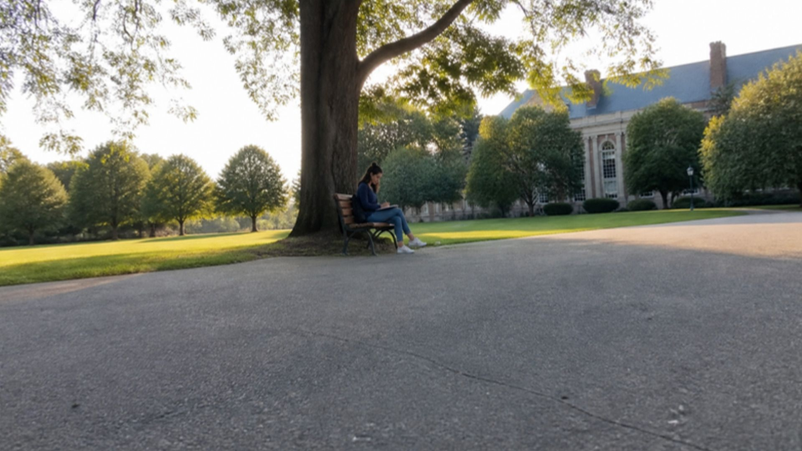
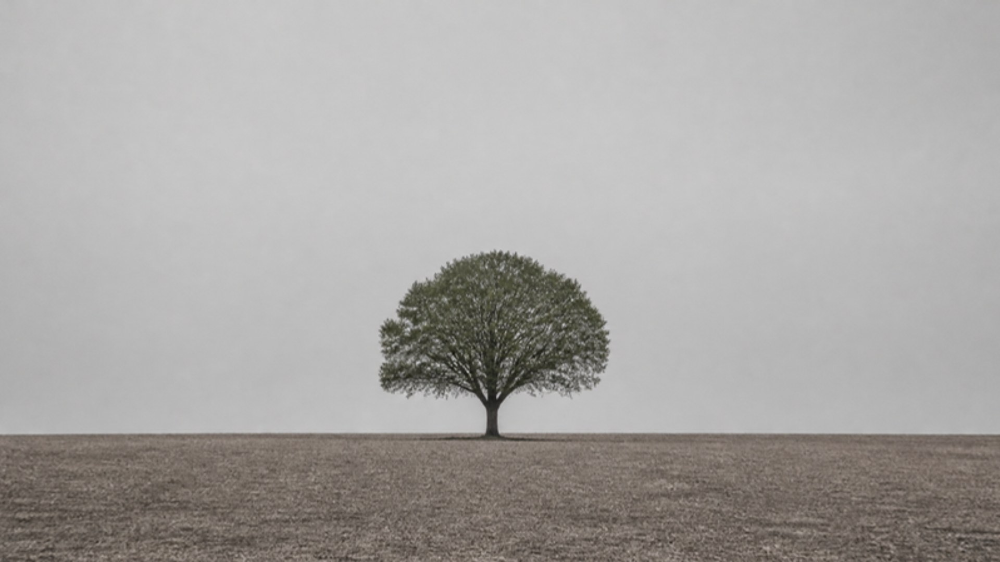
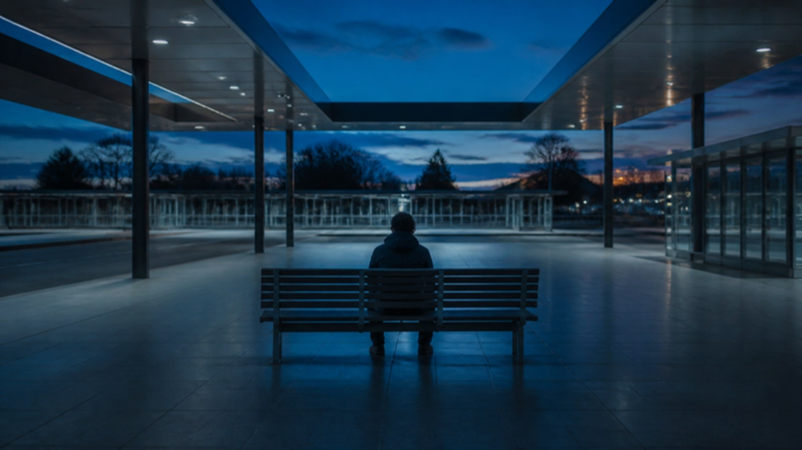
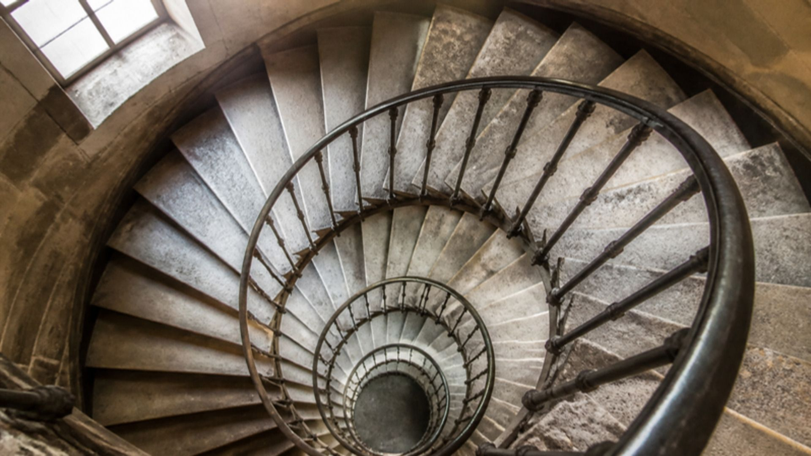
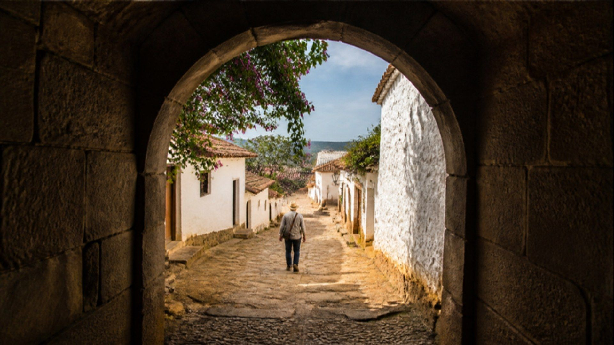
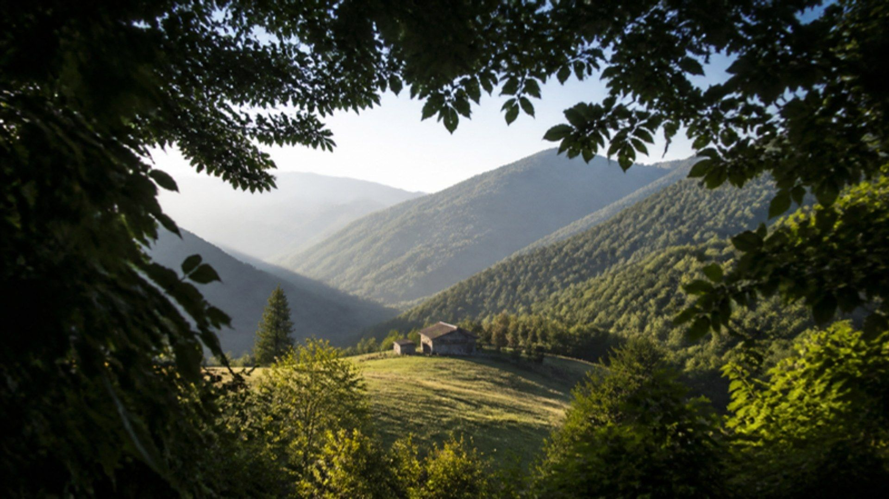
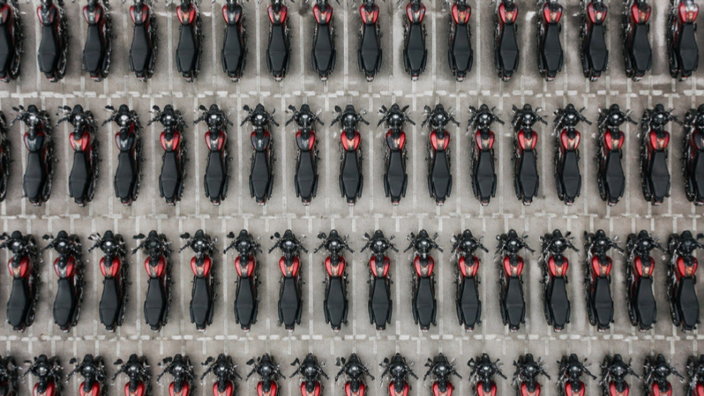
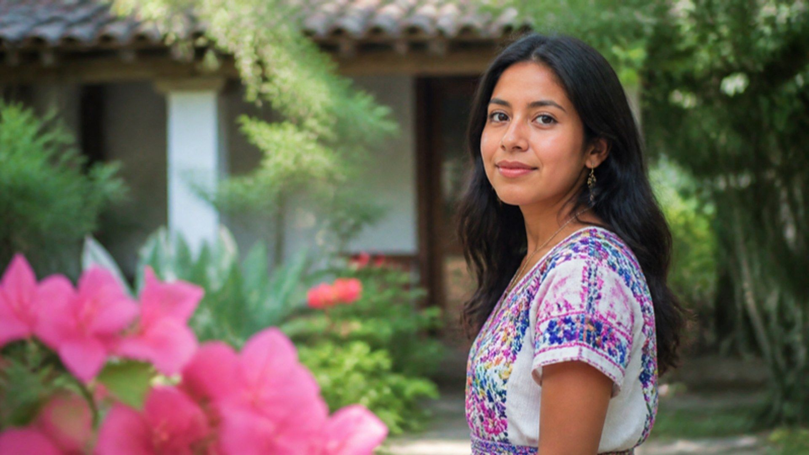
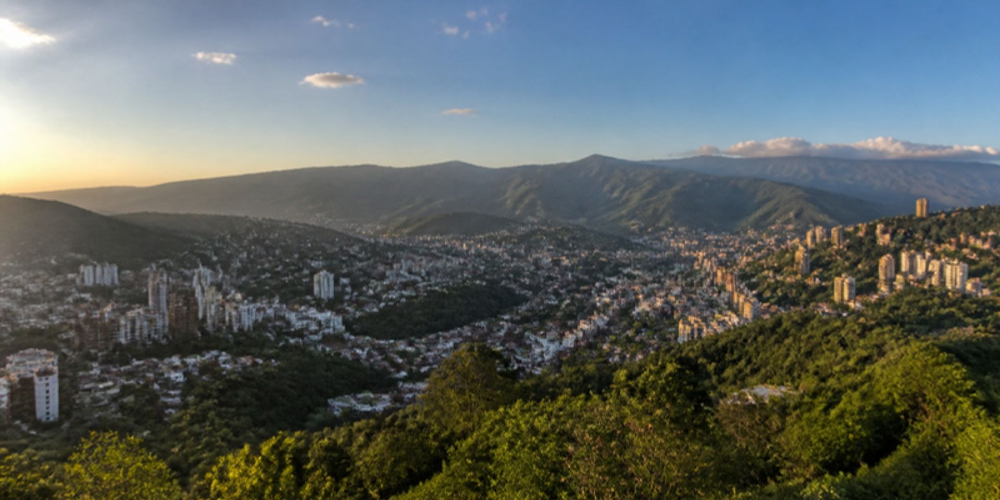

Creación de Contenidos Digitales
Composición fotográfica
Organizar la imagen con intención: técnicas, errores frecuentes y recursos para el celular
Recurso educativo de creación propia
Ruta de la sesión
Aprender a ver antes de disparar
Al final de la sesión podrás identificar técnicas de composición, reconocer errores frecuentes y usarlas a conciencia con la cámara del celular.
10 min
Apertura y fundamentos
40 min
Técnicas de composición
13 min
Errores frecuentes y tips
20 min
Práctica en campus
7 min
Socialización y cierre
Creación de Contenidos Digitales
Pregunta detonante
Mismo lugar, mismo celular. ¿Por qué una parece profesional?

Foto 1
Foto 2
Creación de Contenidos Digitales
Fundamentos
Componer es organizar con intención los elementos del encuadre para dirigir la mirada
Peso visual
Lo grande, claro, contrastado, nítido o humano atrae primero. Se equilibra en el encuadre.
Figura y fondo
Principio de la Gestalt: percibimos un elemento solo si se separa de lo que lo rodea.
Recorrido visual
La mirada entra, viaja y se detiene. Líneas, luz y contraste trazan ese camino.
Arnheim (1954) · Dondis (1973) · Freeman (2007)
Técnica 1
Regla de tercios
Dos líneas verticales y dos horizontales dividen el cuadro en nueve partes. Sus cuatro cruces son puntos fuertes: allí el protagonista gana tensión y deja aire alrededor.
Formulada por J. T. Smith en 1797. Es una guía para salir del centro sin pensar, no una ley.
Creación de Contenidos Digitales
Tercios · el horizonte decide
¿Protagonismo al cielo o a la tierra?
Horizonte abajo: manda el cielo
Dos tercios de cielo. Atardeceres, nubes, tormentas.
Horizonte arriba: manda la tierra
Dos tercios de terreno. Campos, montañas, ciudades.
Creación de Contenidos Digitales
Tercios · puntos de interés
Uno o dos protagonistas sobre los cruces
Un solo punto
Persona, animal o árbol en uno de los cuatro cruces.
Dos puntos en diagonal
Persona y sol en tercios opuestos: se equilibran.
Creación de Contenidos Digitales
Tercios · líneas verticales
Apoyar elementos verticales en las líneas
Un elemento en una vertical
Persona, torre o árbol; el resto del cuadro respira.
Dos elementos, dos verticales
Persona en un lado, montaña en el otro: equilibrio.
Creación de Contenidos Digitales
Técnica 2 · Simetría
La imagen se organiza alrededor de un eje
Arquitectura
Fachadas, iglesias, puentes, escaleras. Cámara al centro y recta.
Reflejos en lagos
Agua quieta: el eje es horizontal y el horizonte va al centro.
Charcos y ventanales
Cámara a ras del charco o del vidrio para duplicar la escena.
Creación de Contenidos Digitales
Simetría
Romper la simetría
Un escenario perfecto y una persona que lo atraviesa: de inmediato aparece un protagonista.
El color o la figura humana pesan más que toda la arquitectura.
Creación de Contenidos Digitales
Técnica 3 · Aislar un elemento
Quitar distracciones hasta que quede uno

Un árbol solitario
Fondo uniforme: nada compite con el sujeto.

Una persona en una estación vacía
El vacío alrededor cuenta soledad o calma.
Aquí centrar funciona: el sujeto ya está aislado.
Creación de Contenidos Digitales
Técnica 4 · Líneas y puntos de fuga
Las líneas llevan la mirada a un destino

Escaleras de caracol
La espiral arrastra el ojo hacia el centro.
Persona en el punto de fuga
Las líneas convergen y entregan al protagonista.
Creación de Contenidos Digitales
Líneas · combinar
Una composición más rica
- Primer plano: la persona, sobre el tercio izquierdo.
- Camino: las líneas guían hacia el fondo.
- Punto de fuga: la luz al fondo cierra el recorrido.
Creación de Contenidos Digitales
Técnica 5
Componer desde las esquinas
Un camino que nace en una esquina inferior invita a entrar. La diagonal es más dinámica que una línea recta al centro.
Que la línea termine en algo: una casa, una persona, la luz.
Creación de Contenidos Digitales
Técnica 6
Figura humana y escala
Sin una referencia conocida, el paisaje no tiene tamaño. Una persona pequeña lo vuelve inmenso.
Turismo, naturaleza, aventura, arquitectura.
Creación de Contenidos Digitales
Técnica 7 · Enmarcar
Un marco natural dentro del cuadro

Arcos, puertas, ventanas
El marco oscuro empuja la mirada hacia la luz.

Árboles y ramas
Suma profundidad y sensación de estar ahí.
Creación de Contenidos Digitales
Técnica 8 · Patrones
Repetir crea ritmo; romper crea protagonista

El patrón
Ventanas, sillas, mesas, vehículos. Llenar el cuadro.
Romper el patrón
Cincuenta paraguas negros, uno rojo: el ojo va allí.
Creación de Contenidos Digitales

Técnica 9
Primer plano complementario
Algo cerca del lente, desenfocado, agrega capas y profundidad.
El primer plano acompaña; no roba protagonismo.
Creación de Contenidos Digitales
Técnica 10 · Panorámicas
Cuando la escena no cabe en una foto normal

Úsala en: ciudades, cordilleras, playas, estadios.
Error común: meter un gran escenario en una foto normal.
Creación de Contenidos Digitales
Participación
Identifica la técnica
¿Qué técnicas reconoces en cada foto? Puede haber más de una.
1 minuto en parejas
Creación de Contenidos Digitales
Errores frecuentes
Antes de disparar: ¿qué estoy fotografiando realmente?
01 No tener protagonista
05 Sacar al espectador de la foto
02 Cortar elementos
06 Espacio negativo sin propósito
03 Desorden visual
07 No recortar
04 Exceso de primer plano
08 Olvidar que menos es más
Creación de Contenidos Digitales
Error 1 de 8
No tener protagonista
Todo pesa lo mismo: la mirada no sabe dónde detenerse.
Corrige: elegir un sujeto, tercio derecho y fondo desenfocado.
Creación de Contenidos Digitales
Error 2 de 8
Cortar elementos
Sin aire arriba ni abajo y el edificio cortado.
Corrige: alejarse, dejar aire y usar dos verticales.
Creación de Contenidos Digitales
Error 3 de 8
Desorden visual
Demasiados elementos compiten por la atención.
Corrige: retirar objetos; la taza manda en el tercio derecho.
Creación de Contenidos Digitales
Error 4 de 8
Exceso de primer plano
Las hojas dominan el cuadro; la lectora pierde fuerza.
Corrige: hojas solo en el borde, como marco desenfocado.
Creación de Contenidos Digitales
Error 5 de 8
Sacar al espectador de la foto
La mirada entra y sale de inmediato por el borde.
Corrige: la curva entra por la esquina y lleva hacia adentro.
Creación de Contenidos Digitales
Error 6 de 8
Espacio negativo sin propósito
Mucho vacío sin intención y un sujeto arrinconado.
Corrige: el vacío va hacia donde mira el sujeto.
Creación de Contenidos Digitales
Error 7 de 8
No recortar
Transeúnte, caneca y carro distraen en los bordes.
Corrige: recortar lo que sobra y llevar al músico al tercio.
Creación de Contenidos Digitales
Error 8 de 8
Olvidar que menos es más
Más elementos y más color no hacen mejor la foto.
Corrige: fondo liso, un solo acento y luz lateral.
Creación de Contenidos Digitales
Tips con el celular
Seis ajustes que mejoran cualquier foto
Limpiar el lente
La mejora más inmediata: adiós al velo y los halos.
Activar la cuadrícula
Tercios, horizontes rectos y simetrías.
Modo retrato
Separa sujeto y fondo con desenfoque.
Luz lateral a 45°
Modela el rostro y da volumen.
Sin zoom digital
Acércate con los pies; recorta después.
Foco y exposición
Mantén presionado y desliza hacia abajo.
Creación de Contenidos Digitales
Resumen
Haz y evita
Haz
- Decide el protagonista antes de disparar
- Ubícalo en un tercio o céntralo con intención
- Usa líneas que entren y lleven a algo
- Revisa los cuatro bordes del cuadro
- Acércate con los pies y recorta poco
Evita
- Horizonte en la mitad o torcido
- Cortar cabezas, pies o edificios
- Fondos cargados que compiten
- Primer plano que tapa al sujeto
- Zoom digital y lente sucio
Creación de Contenidos Digitales
Práctica en campus · 20 min
Ruleta de retos fotográficos
1
Cada pareja gira la ruleta y recibe un reto.
2
Recorren el campus y buscan la escena.
3
Toman varias versiones y eligen la mejor.
4
Nombran la técnica y lo que corrigieron.
Entrega: una foto, sin filtros, con una línea que diga qué técnica aplicaron.
Abrir la ruleta: Ruleta de retos fotográficos
Cierre
Tres preguntas antes de cada foto
¿Qué es mi protagonista?
¿Dónde lo ubico?
¿Qué sobra?
Todo fotograma de un video es una fotografía: lo que hoy aplicaste mejora tus reels, miniaturas e historias.
Creación de Contenidos Digitales
Para profundizar
Referencias
Arnheim, R. (2002). Arte y percepción visual. Alianza. (Obra original de 1954).
Dondis, D. A. (2017). La sintaxis de la imagen: introducción al alfabeto visual. Gustavo Gili. (Obra original de 1973).
Freeman, M. (2007). The photographer’s eye: Composition and design for better digital photos. Focal Press.
Peterson, B. (2015). Learning to see creatively (3.ª ed.). Amphoto Books.
Smith, J. T. (1797). Remarks on rural scenery. Nathaniel Smith.
Fotografías de ejemplo generadas con IA en Canva para fines didácticos.